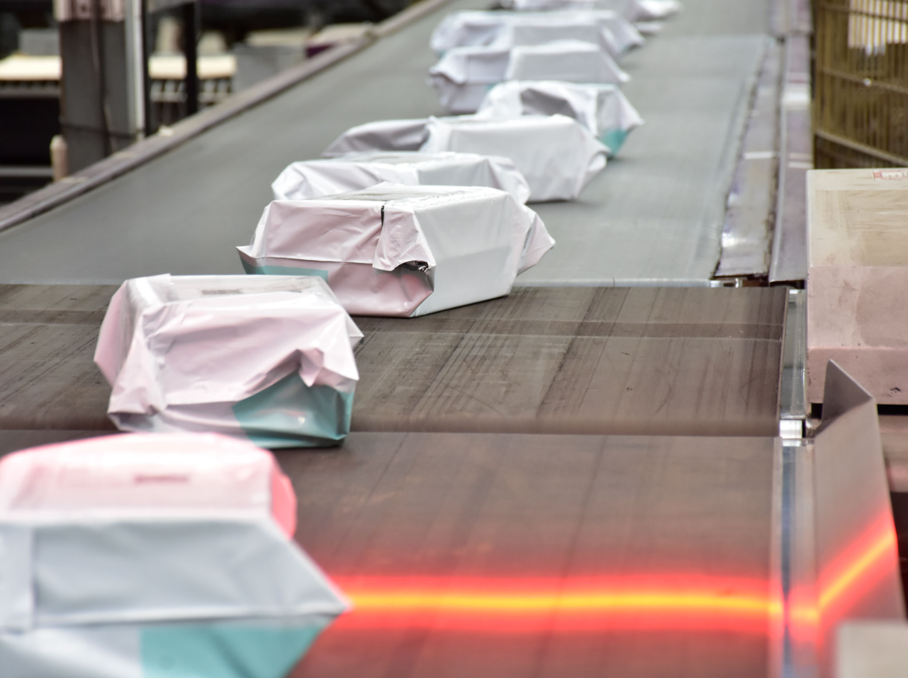

Durante más de 30 años, la operación de paquetería de OCA funcionó sobre un sistema que acumuló décadas de complejidad. El OMS era la apuesta para reemplazarlo. Mi rol fue asegurar que las personas que lo iban a usar tuvieran algo que decir sobre cómo se diseñaba.
Durante más de tres décadas, la operación de paquetería de OCA funcionó sobre un sistema conocido internamente como OEP. Había sido adaptado y extendido para responder a nuevas necesidades, acumulando una complejidad técnica y operativa difícil de sostener.
La experiencia de uso reflejaba el paso del tiempo: interfaces sobrecargadas, navegación compleja, múltiples niveles de menús y una lógica que dependía en gran medida del conocimiento previo de quienes lo utilizaban. La Dirección de IT impulsó la creación de un nuevo OMS para reemplazar progresivamente los sistemas existentes y construir una plataforma capaz de gestionar la trazabilidad de todos los productos logísticos.
Me incorporé al proyecto durante la etapa de definición funcional y diseño de procesos. Trabajé junto a Producto, Ingeniería Operativa, Sistemas y la consultora externa responsable del desarrollo.
Las primeras propuestas de la consultora seguían patrones comunes de software corporativo moderno: interfaces limpias, minimalistas, con fuerte reducción del ruido visual. Pero durante las primeras validaciones apareció un problema: no respondían a la realidad operativa de las plantas.
Las personas usuarias necesitaban identificar información crítica a distancia, operar bajo presión y tomar decisiones rápidas en entornos con infraestructura heterogénea.
Históricamente, muchas de las modificaciones realizadas sobre los sistemas operativos de OCA se implementaban sin involucrar a quienes luego debían utilizarlas. El OMS fue una oportunidad para cambiar eso.
Análisis y documentación de los procesos reales en planta: cómo se operaba, qué información era crítica, en qué momentos se tomaban decisiones y bajo qué condiciones.
Participación en sesiones de trabajo con equipos de IT, operaciones y la consultora para traducir requerimientos técnicos en definiciones orientadas a la experiencia de uso.
Sesiones de revisión con equipos operativos, pruebas de uso y espacios de feedback que permitieron identificar problemas antes de avanzar con el desarrollo.
Consolidación de hallazgos en recomendaciones concretas para el equipo de desarrollo y la consultora, con criterios claros de priorización basados en impacto operativo.

Aunque la implementación continúa evolucionando, el proyecto logró establecer algo que va más allá del sistema en sí: una nueva forma de trabajar sobre herramientas operativas dentro de la organización.
La incorporación temprana de investigación, validación y feedback de usuarios permitió reducir incertidumbre, mejorar decisiones de diseño y generar mayor aceptación del cambio por parte de los equipos operativos.